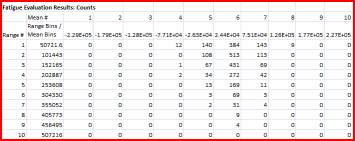
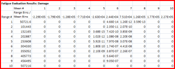
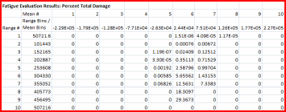

查看疲劳评估结果
将疲劳结果导出到电子表格中并查看范围平均矩阵与总损伤。
-
输出
-
 导出至电子表格
导出至电子表格 -
范围平均矩阵显示分布循环计数、损伤以及总损伤百分比：
-
疲劳损伤结果：数目组中将显示应力函数中各个应变范围的加载循环的次数，以及各自的平均应力。

-
疲劳评估结果：损伤组中将显示由各个应变范围的加载循环引起的损伤，以及各自的平均应变。

-
疲劳评估结果：总损伤百分比组将显示由各个应变范围的加载循环引起的总损伤百分比，以及各自的平均应变。

疲劳评估摘要将报告计算的加载循环总数以及超出范围数，总损伤以及超出范围损伤，以及以事件数目和小时数评估的引发裂纹。

-
-
 Microsoft Excel 窗口
Microsoft Excel 窗口
-
关闭